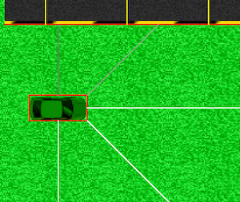

Les lignes en question.
Une voiture est représentable comme un corps physique avec un vecteur, dont le pilote peut en contrôler direction et magnitude. Elle comporte également des caméras, et peut être associée à un conducteur pour former un individu.
Le corps physique d'une voiture est un rectangle qui l'entoure. Il est visible en rouge lorsque l'option Tracé est activée, comme sur l'image plus bas.
Il n'est pas possible de contrôler directement la position de la voiture. On doit pour cela contrôler son vecteur de vitesse. On peut donc changer l'angle, accélérer ou freiner. La vitesse de la voiture est donnée en permanence au réseau de neurones de l'individu.
Pour piloter la voiture, le conducteur doit aussi voir ce qui se trouve devant lui. Pour cela, la voiture est équipée de 5 "caméras" qui sont les segments représentés sur l'image ci-dessous. Il y en a deux latérales, deux obliques avant et une frontale.
Ce que le réseau de neurone reçoit de chacun de ces capteurs, c'est une valeur de distance qui correspond à la longueur du segment. Une caméra obstruée donnera la valeur 1, tandis qu'une caméra qui voit loin devant elle donnera la valeur 0. La distance de vision maximale d'une caméra est de deux cases.

Les caméras d'une voiture. On voit également son corps physique.
Dans le cadre de l'onglet Évolution Génétique, les voitures sont associées à un réseau de neurones pour former des individus. Chaque individu voit les valeurs des caméras et sa vitesse, et choisi comment piloter la voiture. À chaque ligne de récompense franchie, il gagne un point. S'il touche le bord du circuit, sa voiture s'arrête à cet endroit. Il se reproduira ensuite selon son score, comme expliqué dans la partie du guide portant sur l'Algorithme Génétique.
Ils sont visibles sous forme de lignes rouges quand l'option Tracé est activée. Si une voiture en touche un, elle a perdu.
Elles sont visibles sous forme de ligne jaune quand l'option Tracé est activée. Si une voiture en touche une, elle gagne un point.
Les lignes en question.
En plus de la liste de circuits personnelle, il est possible d'en importer/exporter, sous la forme de fichiers .gameGrid. Les circuits sont alors représentés sous forme textuelle, au format nom:typeDeCase(rotation|X|Y); où X et Y peuvent être des ensembles de cases.